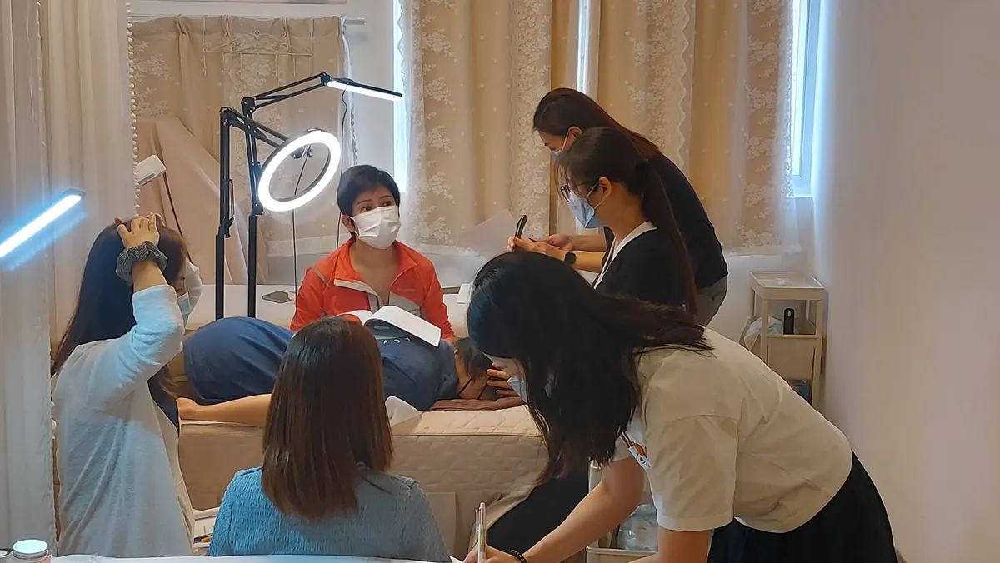

The Bojin Journal · Eyes
Heavy, hooded eyelids making you look tired?

Heavy lids are usually not about being under-rested. Over time the brow settles a little lower, the forehead holds tension that pulls everything down, fluid gathers, and the skin up top grows thinner. None of that is a flaw you created. A careful, well-placed method can relax that pull and ease the fluid, so your eyes look a little more open and awake, even on a day you feel perfectly fine.
Why do my eyelids feel so heavy and hooded?
A few ordinary things tend to stack up together. As the years pass, the brow gradually descends, so the skin of the lid has a little less lift holding it up. At the same time, most of us carry a surprising amount of tension in the forehead and between the brows, and that tension tugs downward all day, adding to the heavy feeling.
Fluid plays a part too. When it pools around the eye instead of moving along, the whole area can feel puffy and weighed down, especially first thing in the morning. And the skin over the lid is some of the thinnest on your face, so every one of these small changes shows there first.
So if your eyes look tired when you are not, it is rarely a sleep problem. It is the brow, the forehead tension, and a bit of fluid working together, and all three respond well to a calm, deliberate touch.
How the Bojin Method helps heavy lids
First, what bojin is. If you already know gua sha, you have a head start: bojin grew from the same family of Chinese hands-on face care, so it will feel familiar. It is still its own deliberate method. What makes it work is three things: the order you work in, the angle you hold the tool, and the exact spot you are working.
The traditional tool is a bojin stick: a slim, polished stainless steel tool shaped to follow the curves of your face, worked with its rounded edge. You can start with clean fingertips or a smooth-edged tool you already own while you learn the moves, but the stick is what the method was built around. And the pressure is not the barely-there touch people expect, nor is it forceful. It is the right, comfortable pressure for you, firm enough to be felt, never enough to hurt or drag this delicate skin.
Around hooded lids, most of the work is above the eye, not on it: easing the forehead and brow so they stop pulling down, and giving pooled fluid somewhere to go. A tool on its own usually comes with no method attached: no one shows you the order, the angle, or the spot. Add that method, and the same few minutes feel different.
For heavy lids, comfortable pressure matters more than pressing hard or barely touching. The right angle, held in the right order and place, is what makes the difference. That order, angle, and placement is the method.

The 5-minute brow-and-eye opening reset
Use your bojin stick or clean fingertips, and add a little oil or cream first so nothing drags. Work in order, follow the angle of the bone, and use the right comfortable pressure: firm enough to feel, never featherlight, never forceful. This is gentle self-care, not medical treatment, so keep it easy and stop any time it stops feeling good.

Warm and settle the forehead
With flat fingertips or the rounded edge of your stick, sweep slowly up the forehead a few times to soften the tension holding everything down. This settles the area before you do anything precise.
Read your face first
Look in the mirror and notice which side feels heavier and where the forehead is tightest. That quick read tells you where to spend more time and sets the order you will follow.
Ease the brow line
Rest the rounded edge just under the brow bone and glide slowly outward toward the temple, keeping the angle low against the bone. Work from the inner brow out, at a comfortable pressure, to relax the pull on the lid.
Open across the forehead and temple
Glide from the center of the forehead outward and down toward the temple, following the same direction each time. This is the spot that tugs the brow down, so give it a few unhurried passes.
Finish down the sides of the neck
This is the step people skip. Sweep gently down the sides of the neck several times so the fluid you just moved has a clear path to drain away, and the whole area looks less puffy.
What can I expect?
Done regularly, most women notice their eyes look a little more open and awake, the forehead feels less tight, and the area looks less puffy and more rested. Many say the calmest part is the few quiet minutes at the mirror, and a small lift in confidence when they catch their reflection afterward. The outer corner tends to hold its own squint-tension too, separate from the lid itself: see crow's feet at the corners of your eyes if that's where you notice the most.
Now the honest limits. This is a soothing self-care ritual, not a treatment, and not a brow lift. It will not change the underlying structure of your eyelid or the natural changes of getting older. The results are gentle and everyday, and they fade if you stop. If a lid suddenly droops on one side, changes quickly, or comes with pain or vision changes, that is not a bojin question. Please see your doctor.
Heavy lids are not a sign you are doing anything wrong. They are the brow, the forehead, and a little fluid settling together over time. A few calm, well-placed minutes can help your eyes look a bit more awake, and that is a lovely thing to give yourself.
Quick answers
Can bojin lift my hooded eyelids for good?
No, and anyone promising that is not being honest with you. Bojin can relax the forehead and brow tension that pulls the lid down and ease fluid, so your eyes look a little more open and awake. It cannot change your eyelid structure or give a lasting brow lift, and the effect is gentle, everyday, and fades if you stop.
Do I press right on my eyelid?
No. For heavy lids almost all the work is above and around the eye: the brow, forehead, and temple, never on the lid or the eyeball itself. That is where the downward pull and the fluid come from.
Can I use a gua sha stone instead of a bojin stick?
You can start with a gua sha stone or clean fingertips while you learn the moves. A bojin stick is the traditional tool the method was built around, but the real difference is not the object in your hand. It is working in the right order, at the right angle and spot, with a comfortable pressure.
How often should I do this, and how soon will I see anything?
A few minutes most days is plenty; gentle and regular beats hard and occasional. Many women notice a less puffy, more awake look on the day they do it, and a softer, calmer forehead over a few weeks. It is upkeep, not a one-time fix: the results fade if you stop.
See the order, angle, and exact spot in 3 minutes
Reading it is one thing; feeling it is another. My free 3-minute video walks you through this brow-and-eye reset: the order to follow, the angle to hold, exactly where to work, and how the right comfortable pressure should feel. Come try it with me and see how a little more open your eyes can look.
Watch the free 3-min videoYu-Ting Lan is a Taiwan-based international bojin instructor and the founder of Héhé Studio. She has taught her bojin method to more than a thousand students, from complete beginners to grandmothers, across Taiwan, Hong Kong, and Malaysia.